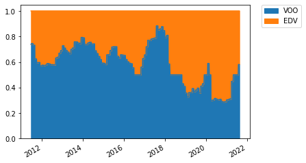

Optimize the portfolio.¶
[1]:
from mypo import Runner, Loader
from mypo.rebalancer import MonthlyRebalancer
from mypo.optimizer import MinimumVarianceOptimizer, SharpRatioOptimizer
from mypo.indicator import yearly_total_return, max_drawdown, max_drawdown_span
import numpy as np
[2]:
loader = Loader()
[3]:
loader.get('VOO', 0.0003)
loader.get('EDV', 0.0007)
[4]:
market = loader.get_market()
[5]:
optimizer = MinimumVarianceOptimizer()
runner = Runner(
assets=[1.2, 0.8],
rebalancer=MonthlyRebalancer(optimizer=optimizer, do_re_optimize=True),
cash=0.5
)
runner.run(
market=market,
train_span=200,
verbose=True
)
report = runner.report()
print(optimizer.get_weights())
print(yearly_total_return(report))
print(max_drawdown(report))
print(max_drawdown_span(report))
report.plot()
100%|██████████| 2454/2454 [00:06<00:00, 370.91it/s]
[0.39969736 0.60030264]
1.1258027617288884
0.8688225158449558
229
[5]:
<AxesSubplot:>

[6]:
optimizer = MinimumVarianceOptimizer(with_semi_covariance=True)
runner = Runner(
assets=[1.2, 0.8],
rebalancer=MonthlyRebalancer(optimizer=optimizer, do_re_optimize=True),
cash=0.5
)
runner.run(
market=market,
train_span=200,
verbose=True
)
report = runner.report()
print(optimizer.get_weights())
print(yearly_total_return(report))
print(max_drawdown(report))
print(max_drawdown_span(report))
report.plot()
100%|██████████| 2454/2454 [00:06<00:00, 368.53it/s]
[0.29286531 0.70713469]
1.1205912436563183
0.8718984537348183
232
[6]:
<AxesSubplot:>

[7]:
optimizer = SharpRatioOptimizer()
runner = Runner(
assets=[1.2, 0.8],
rebalancer=MonthlyRebalancer(optimizer=optimizer, do_re_optimize=True),
cash=0.5
)
runner.run(
market=market,
train_span=200,
verbose=True
)
report = runner.report()
print(optimizer.get_weights())
print(yearly_total_return(report))
print(max_drawdown(report))
print(max_drawdown_span(report))
report.plot()
46%|████▌ | 1117/2454 [00:03<00:03, 362.97it/s]/app/mypo/runner.py:108: RuntimeWarning: divide by zero encountered in true_divide
self._average_assets_prices = (
/app/mypo/runner.py:109: RuntimeWarning: invalid value encountered in multiply
self._average_assets_prices * previous_assets + diff * trading_prices
100%|██████████| 2454/2454 [00:06<00:00, 364.37it/s]
[0.50207736 0.49792264]
1.1103052665244668
0.8658993115231367
318
[7]:
<AxesSubplot:>